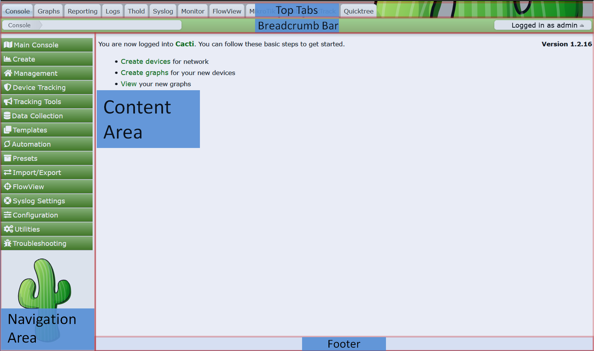
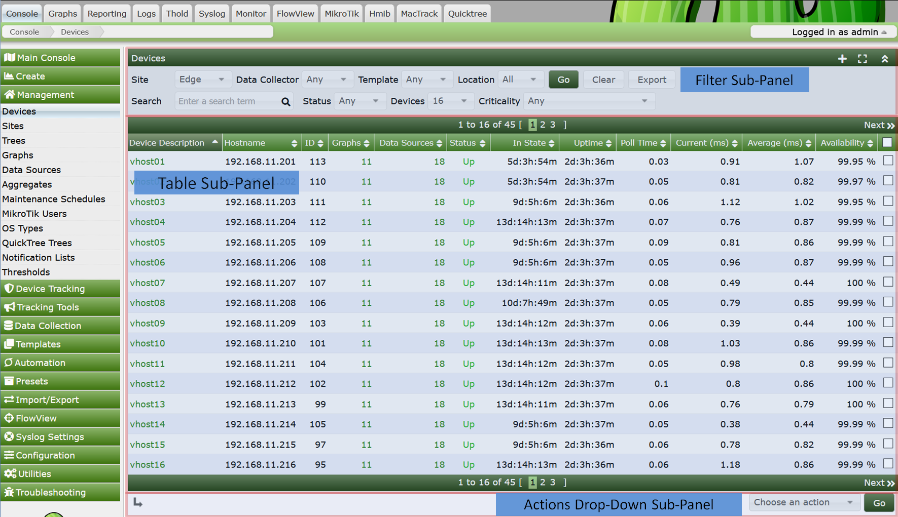
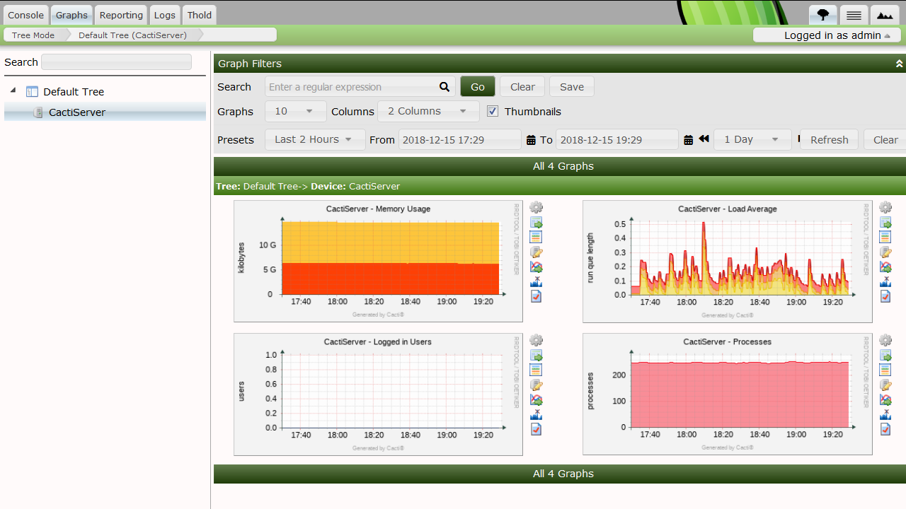
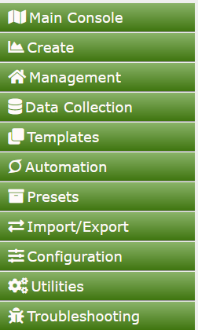

The Cacti User Interface is visually broken into multiple panels. Each major major panel is designed to hold content. Depending on the Cacti Theme you use some of these panel may not be visible at the Theme Developers discretion. The common panels are:
You can see the default Cacti layout with its various panels in the image below. You will note, in this Modern Theme, the Theme Author has decided to dispense with the Footer.

In Cacti, when you click on the Top Tab, you will by default enter a completely different section of Cacti. Cacti's Top Taps are Designed to mimic browser tabs, this helps with users orienting themselves to the various sections of Cacti. When you have many Plugins installed as in the example above, you can see clearly the benefit of these navigation aids.
Inside each of these panels, a page can be broken into sub-panels. Two panels customarily broken into sub-panels include the Navigation Area and the Content Area.
In the example below, we show the Device page in Cacti calling out the various sub-panels.

Most of Cacti's pages are laid out in this fashion. However, what goes into the Cacti Content Area is completely under the Plugin authors control.
At the Theme developers discretion, all pages should include both the Top Tab and Breadcrumb Bar. Inside of the Breadcrumb Bar or Top Tap panels you should always see the User Profile and Menu on the right.
To use Cacti properly, you should first understand these sections. We will start by describing the Cacti Console.
Top Tabs
Cacti Top Tabs provide Cacti with multiple Navigation Areas. By default, Cacti includes four Top Tabs. They are Console, Graphs, Log and Reports.
Breadcrumbs
Breadcrumbs appear directly below the Top Tabs. Note that some Cacti Themes disable the Breadcrumbs. You can click on a Breadcrumb area to navigate to that area if desired.
Cacti Content Area
This is where the main page content will be displayed. It is directly below the Breadcrumbs or the Top Tabs with some Cacti Themes. They can include any HTML that the Plugin Author or Cacti Administrator desires in the case of External Links.
Navigation Menu
If you click on the Cacti Console, you will see an example Navigation Menu. These menus can appear on any Plugin based Top Tab page in addition to the Cacti Console.
Cacti Tables
These tables are where table based data is rendered in Cacti. Cacti Tables are presented using an arcane, though easy to use API.
Table Filters
Any Cacti Table can include a Table Filters. These filters can be used to limit the data returned to a Cacti Table.
Actions Dropdown
Any page that includes a Cacti Table will generally include an Actions Dropdown. These Actions Dropdown menus allow you to take action on a table row or rows.
User Profile and Menu
This is where a Cacti User can edit their profile, change their password, logout, or find links to other Cacti information and support.
Non-Administrative users, such as the Cacti Guest account should not have access to the Cacti Console. The Cacti Guest account should additionally not have access to their User Profile as that account is shared with many users.
The Cacti Graphs Top Tab is where most Cacti Graphs are viewed. By default, the Cacti Graphs Top Tab includes three distinct views. They include:
Tree View
Allows Cacti Users to view Graphs in the form of hierarchical Trees. These Trees are generally constructed by the Cacti Administrator and are controlled either at the User or User Group level.
Preview View
The Preview View provides a view of all Graphs that a Cacti User has access to. Table Filters are provided to constrain the list of Graphs returned to the page.
List View
The List View allows the Cacti user to Create their own Preview Page by allowing them to select graphs from various pages, and then finally view those pages from the Preview View.
In the example Tree View page below, you can see the Tree Navigation Area to the left, and in the Cacti Content Area, you can see the Graphs and a Table Filter area for constraining the list of Graphs returned. You can Search the Tree View from the Search area above the Tree Navigation Area.

In the image below, you can see a basic Cacti Console menu area. It is divided into separate sub-menus. We will describe the purpose of each next.

All of these objects types will be explained in subsequent sections of the Cacti documentation. For now, it's important just to know that these pages exist.
Copyright (c) 2004-2024 The Cacti Group